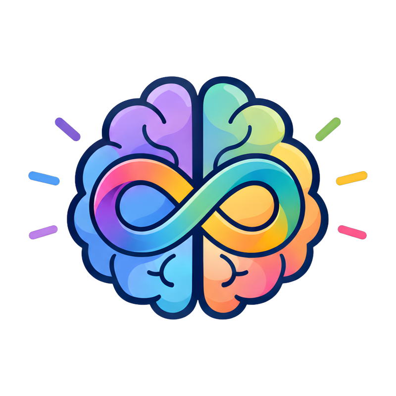

Asistente de consulta
El asistente de consulta ya está activo dentro de la aplicación. Inicia sesión y ábrelo desde el menú superior.
Abrir el asistente
El asistente de consulta ya está activo dentro de la aplicación. Inicia sesión y ábrelo desde el menú superior.
Abrir el asistente